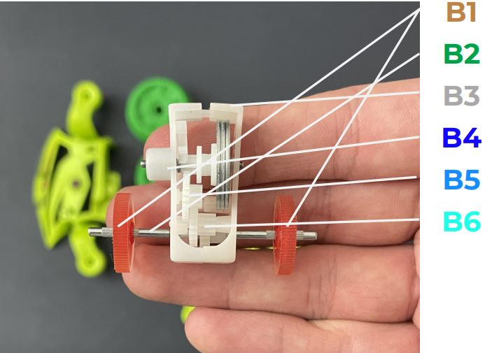
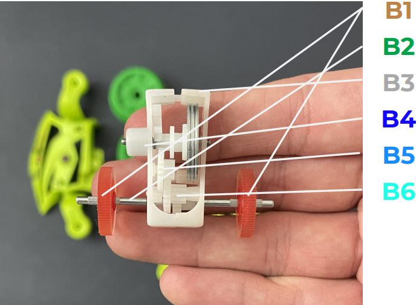

Assignment 1- Flywheel Car
Assembly:
In assembling the toy flywheel mortocycle, some pieces are much more
interwined with each other than others. Assembling the vechile comes in three
major sections, first being the fly core (a parts), then the wheel core (b parts), and
finally the outer shell (c parts). The fly core must be assembled first, so it can be fit
into the wheel core as it’s assembled and then finally the wheel core can be fit into
the outer sheel. There is no other way to go about this, you cannot make the wheel
core and try to build the fly core inside and same with building the wheel core
inside the outer shell. With each of these sections the wheel core proves to be even
more difficult as all parts must be attached to the to the left side (part B4) before
the right side can be put on, or else all parts in the middle will be inaccessibile.
Other than that most pieces fit together rather logically, and the gears all only
match up in a certain scheme making them difficult to mess up.


 
